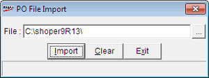

This option is used to import a purchase order or an indent by a POS location using the .xml file sent by another POS location or a Distributor.
How to reach: Stock > Purchase Order > Import
The PO File Import window is displayed.

File: Enter the name of the file and the path from which data has to be imported. Alternatively, click to browse the directory and select the file.
Note: The distributor can later consolidate the POs received from different POS locations and generate a PO to be sent to a Vendor or can convert them into Sales Order/ Dispatch Advice.